How to migrate from vSphere to VMware vSphere Foundation (VVF)
Prerequisites:
-
Installed VCF Installer (latest version)
-
Depot Configuration has been done
-
Binaries are downloaded with status “Success”
-
vCenter version at least 9.0.x
-
Your virtual switch infrastructure is based on DVS
for more Information on Preparing to Deploy a new VMware Cloud Foundation or vSphere Foundation Platform, please visit:
Start the migration process
- Connect to your VCF Installer appliance via https and provide the credentials.
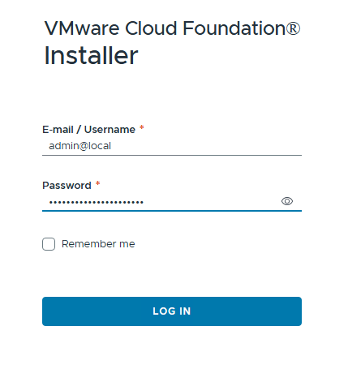
- After logging into VCF Installer, select “DEPLOYMENT WIZARD” to start the migration process.
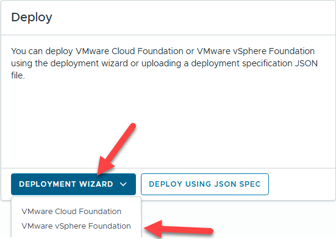
- To import an existing vCenter, opt in the checkbox next to “Use an existing vCenter as the management domain vCenter.” and click “NEXT”
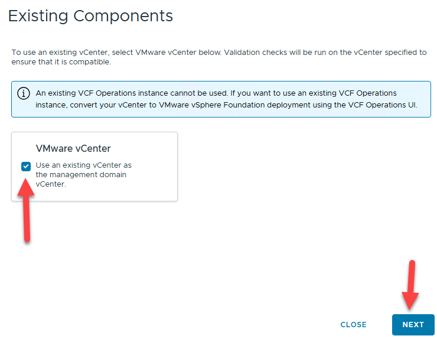
- Select the target version and proceed with “NEXT”
Optionally, you can enable “Auto-generate passwords for newly installed appliances” or disable “Enable Customer Experience Improvement Program (CEIP)”
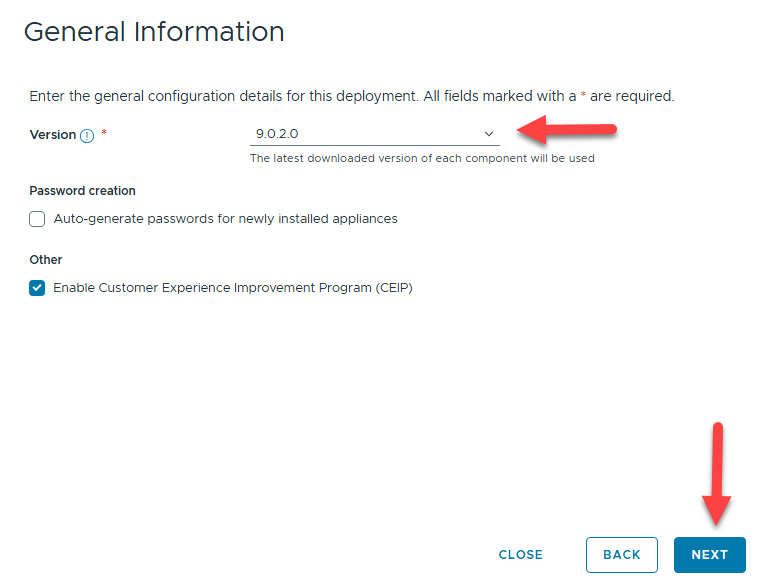
-
VCF Operations is a core component for VVF and VCF, it is responsible for e.g. Licensing
-
Operations Appliance Size: Size of the appliance – small is only recommended for lab environments!
-
Operations primary FQDN -e.g. when you will have more than 1 appliance, specify the load balancer (VIP) name as FQDN
-
Administrator Password
-
Root Password
-
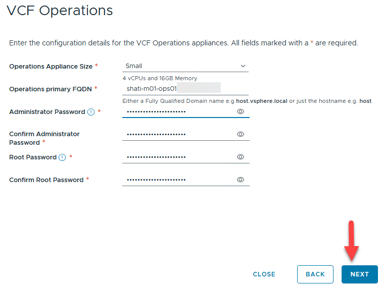
-
Specify the current vCenter credentials for importing the existing vCenter into the VVF or VCF Environment, click “NEXT”
-
vCenter: FQDN of your existing vCenter appliance
-
Root Password: root password of your existing vCenter appliance
-
SSO user name: e.g. administrator@vsphere.local
-
SSO password: e.g. Password of your administrator@vsphere.local account
-
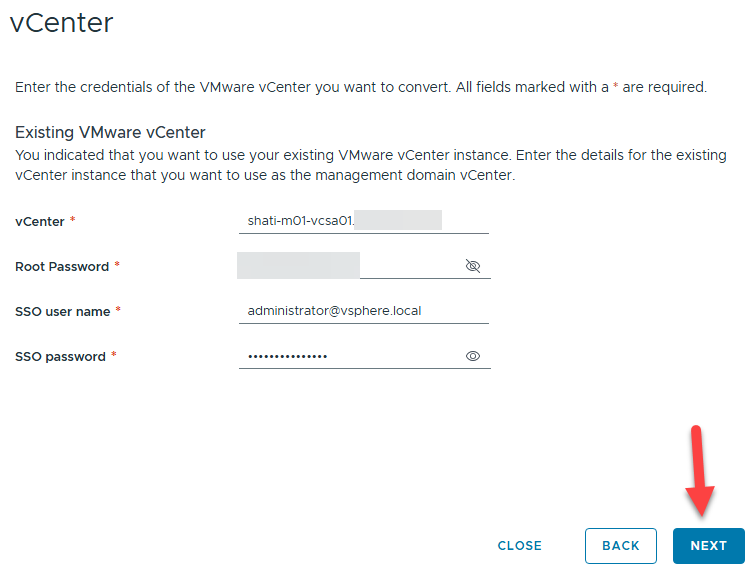
- You have to confirm the vCenter certificate to proceed.
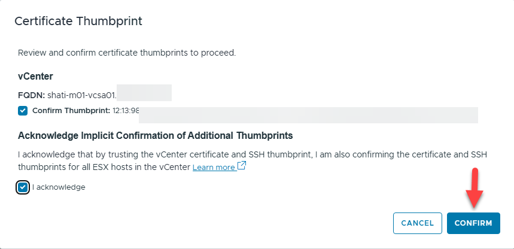
-
Review the planned deployment or download the json spec.
- Optional: You can download the json spec and edit with your preferred editor to modify values or options which are not present in the UI.
-
You can then import the json spec at the very beginning to deploy your customized environment.
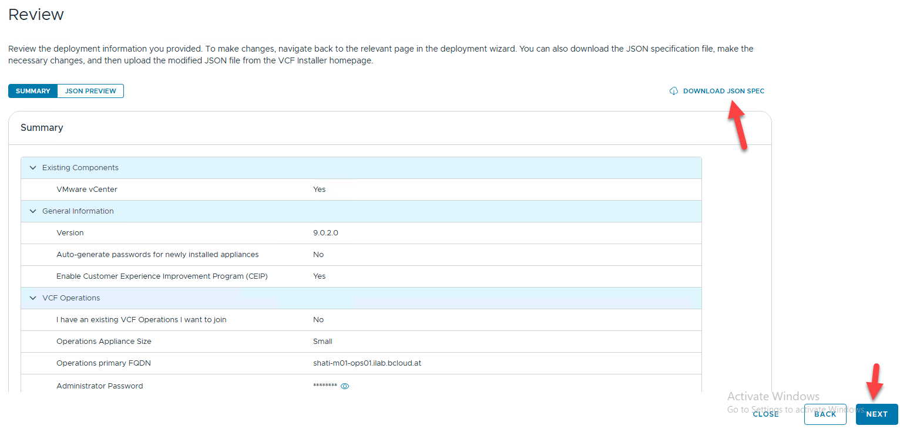
-
The “Validate & Deploy” Stage checks all settings and validates the environment.
-
Correct any error and analyze all warnings prior clicking “DEPLOY”
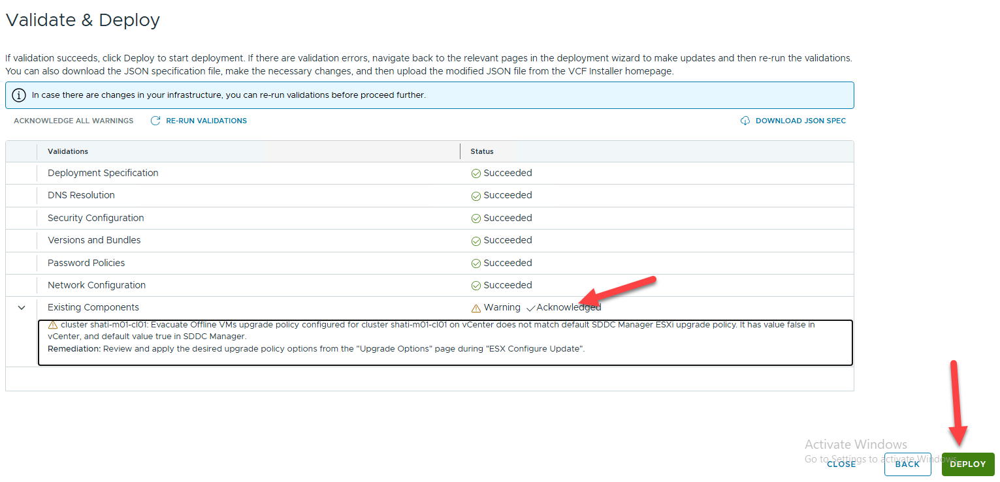
- You can monitor the deployment status within the VCF Installer UI.
If any error occurs, consult the log file and correct the problem. After that, simply restart the deployment with the button on the upper right corner which will be visible in case of an error.
But don't panic! This installation takes time! In my LAB environment I had to wait approx. 35 Minutes.
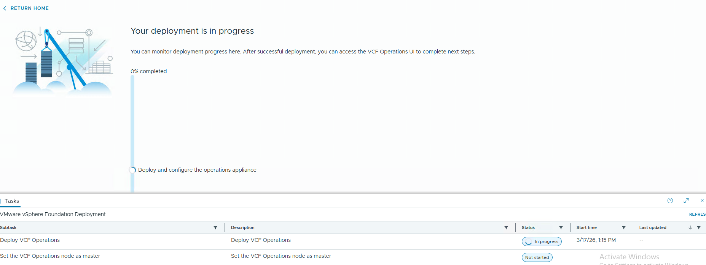
- When completed, follow the next steps regarding the licensing of the environment
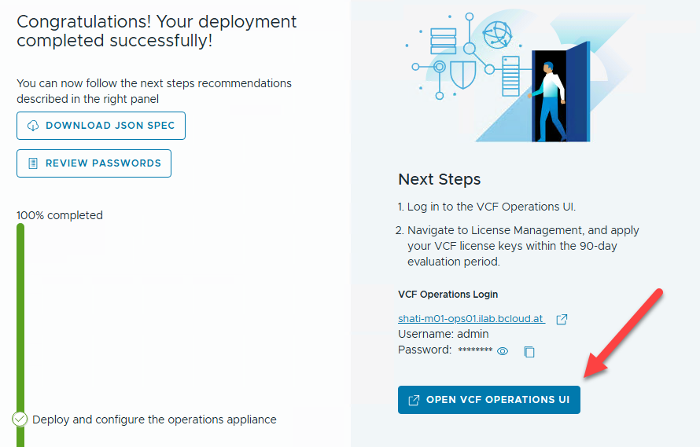
Troubleshooting:
ssh into your VCF Installer appliance and look at /var/log/vmware/vcf/domainmanager/domainmanager.log for any installation issues.
Connect VCF Operations with vCenter
- Login into VCF Operations
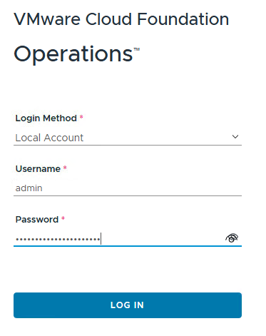
- Go to Administration -> Integrations, select “ADD” and select “vCenter” as account type.
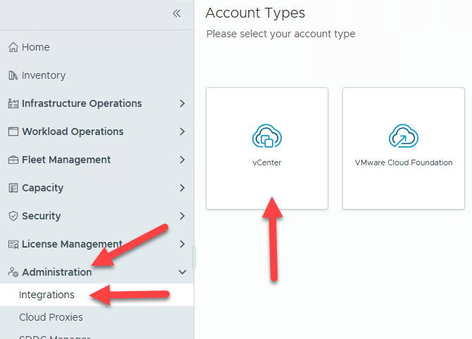
- Fill out all required fields and click “VALIDATE CONNECTION”, on success, click “ADD”
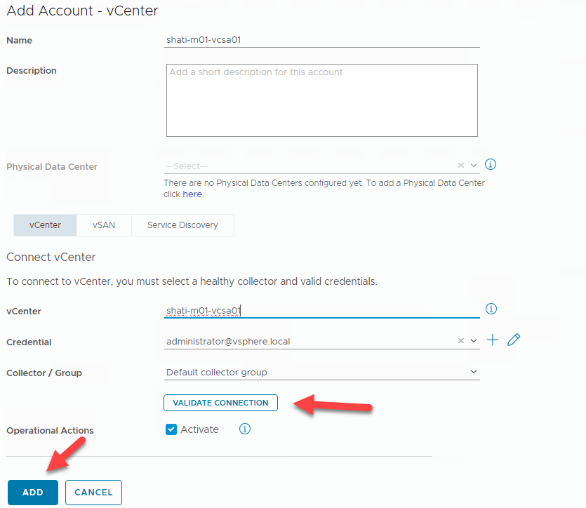
- Confirm this information.
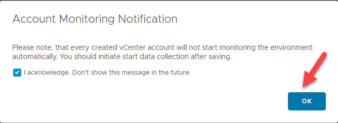
- Within the List of Integrations, expand the entry with status “Stopped” and click the three dots
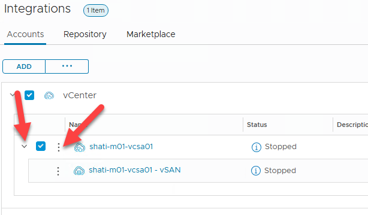
- Select “Start Collecting All” to enable metric collection
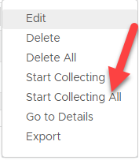
- Now, the Integration is displaying a warning, but this should disappear after a while.
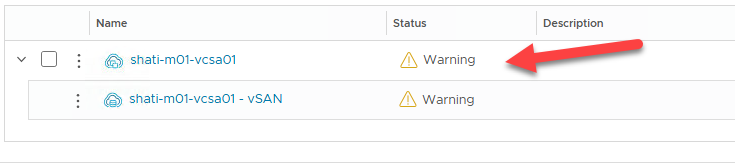
After approx. 10 minutes, the status is green.
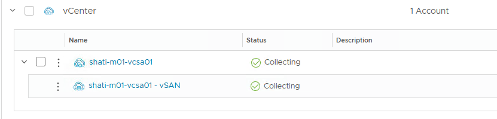
Integrate VCF Operations for Logs with VCF Operations
This step is optional but highly recommended!
VCF Operations for Logs is a component where you can store your logs in a central place for troubleshooting.
- Navigate to “Infrastructure Operations” -> “Analyze” and click “CONFIGURE OPERATIONS-LOGS APPLIANCE”
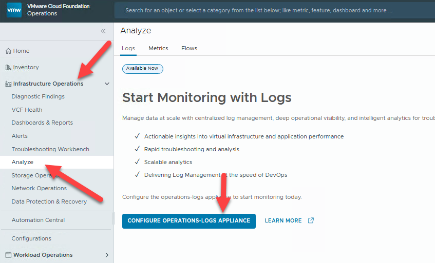
- On the “Operations-Logs Appliance Integration” provide the connection details for your manually deployed VCF Operations for Logs appliance and click “VALIDATE CONNECTION”.
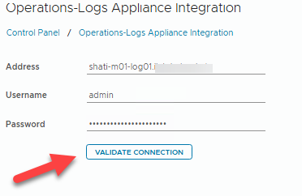
-
Click “SAVE” when the connection test was successful.
-
Check the integration – Navigate to “Infrastructure Operations” -> “Analyze” and see, if your syslog Information is displayed.
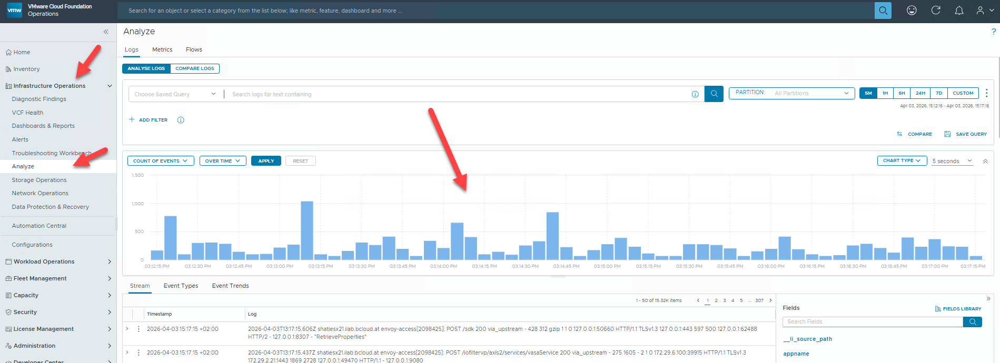
Congratulations!
You have completed the basic VVF 9.0.2 deployment!